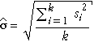

Échantillons au lieu de valeurs individuelles
Bien que les cartes de contrôle pour les valeurs individuelles sont parfois utilisés, il est plus courant pour examiner des échantillons d'un processus à intervalles réguliers, plutôt que les valeurs individuelles. Il ya quelques raisons:
Carte de contrôle des moyens
Nous considérons d'abord la détection de savoir si le niveau de sortie moyenne d'un processus est en évolution, basée sur un tableau exécuté sur les moyens d'échantillons successifs. Exemple des moyens de n valeurs varient moins d'un échantillon à que les valeurs individuelles, et l'écart-type ont
 =
= 
Les limites de contrôle pour un tableau de contrôle des moyens de l'échantillon sont donc ...
 ± 3
± 3
où  et s sont des estimations de la moyenne et l'écart-type des valeurs individuelles lorsque le processus est en contrôle. Ces limites de contrôle doivent être distingués avec soin à partir des limites de contrôle correspondantes pour les valeurs individuelles,
et s sont des estimations de la moyenne et l'écart-type des valeurs individuelles lorsque le processus est en contrôle. Ces limites de contrôle doivent être distingués avec soin à partir des limites de contrôle correspondantes pour les valeurs individuelles,
 ± 3s
± 3s
Depuis les limites de contrôle utilisé dans un tableau de contrôle pour les moyens sont plus proches de  que ceux d'une carte de contrôle pour les valeurs individuelles, le tableau est plus sensible aux changements dans le processus de moyenne sur le temps.
que ceux d'une carte de contrôle pour les valeurs individuelles, le tableau est plus sensible aux changements dans le processus de moyenne sur le temps.
Formation des données
Afin d'obtenir des limites de contrôle, nous devons connaître l'écart moyen et standard des mesures lorsque le processus est «sous contrôle». Ce sont généralement estimées à partir d'un ensemble de «échantillons d'entraînement» dans lequel le plus grand soin est pris pour éviter les causes spéciales.
Le processus signifie,  est estimée par la valeur moyenne des échantillons de la formation. Nous allons d'abord utiliser l'écart-type de l'échantillon de formation que notre estimation, s, mais de décrire une meilleure estimation à la fin de cette page.
est estimée par la valeur moyenne des échantillons de la formation. Nous allons d'abord utiliser l'écart-type de l'échantillon de formation que notre estimation, s, mais de décrire une meilleure estimation à la fin de cette page.
Epaisseur apprêt
Le diagramme ci-dessous montre l'épaisseur de l'apprêt de peinture en mils (une mesure impériale égale à un millième de pouce), mesurée à partir d'un échantillon de 10 articles chaque matin et chaque après-midi pour 5 matinées successives et après-midi. Nous allons considérer ces données comme un ensemble de formation à partir de laquelle nous obtenons des limites de contrôle pour les échantillons d'épaisseur plus tard, l'apprêt.
(En pratique, il ya des échantillons de formation généralement plus, mais nous utilisons un ensemble de données réelles petite définie pour l'illustration.)
Les limites de contrôle qui sont initialement indiqués sont ceux d'un tableau exécuté des valeurs individuelles — moyenne ± 3 écarts-types pour les 50 valeurs dans les données d'entraînement.
Utilisez la barre de défilement pour afficher les échantillons qui ont été mesurées au cours des 15 prochaines demi-journées. Aucune valeur n'est en dehors des limites déviations 3-standard, donc nous pouvons conclure que le processus est en contrôle.
Maintenant cliquez sur le Moyen case Afficher. Les valeurs brutes dans les échantillons sont estompés et les moyens de l'échantillon sont affichés, rejoints par des lignes bleues. Les moyens de l'échantillon sont considérablement moins variables que les valeurs brutes, alors les limites de contrôle sont redessinés plus proche de la ligne centrale.
Basé sur les moyens, nous avons encore conclure qu'il n'existe aucune preuve d'un changement dans le processus de moyenne.
Comme dans les cartes de contrôle pour les valeurs individuelles, déclencheurs supplémentaires peuvent être utilisées qui dépendent de plusieurs moyens successifs. Elles sont définies de la même manière que ceux des cartes de contrôle pour les valeurs individuelles. Par exemple, six échantillons successifs signifie soit croissante ou décroissante suggèrent qu'il pourrait y avoir une cause particulière.
Meilleure estimation de s à partir d'échantillons de formation (niveau avancé)
Une estimation différente de l'écart type processus, s, est généralement préférée à l'écart type global des valeurs dans les échantillons de la formation.
Au lieu de cela, s est généralement estimée à partir des écarts-types au sein de chacun des échantillons de la formation. On note les écarts-types des échantillons de formation k, chacun de taille n, par s1, s2, ..., sk. L'estimation la plus couramment utilisée de s est...
où la valeur c4(n) est une constante qui dépend de la taille de l'échantillon dans chacun des échantillons k, n. Sa valeur peut être obtenue à partir des tableaux ou en utilisant les formules

La deuxième partie de cette formule permet à la valeur de c4 pour la taille de l'échantillon n pour être obtenu à partir de sa valeur pour la taille de l'échantillon n - 1, comme illustré ci-dessous.

(Une autre estimation de s qui est parfois utilisé est

Bien que cette estimation est meilleure lorsque les données ont une distribution assez symétrique, l'estimation antérieure est plus «robuste» à des problèmes dans les données de formation.)